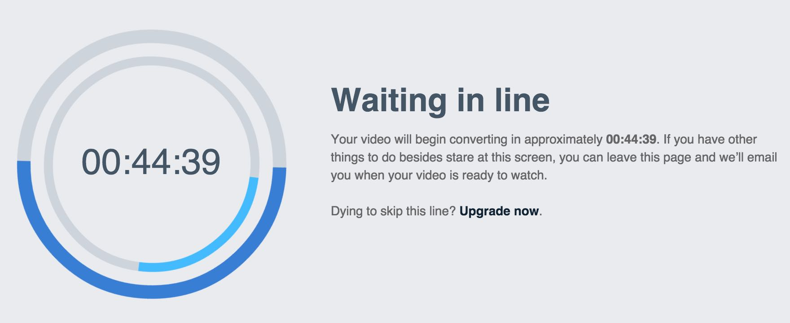
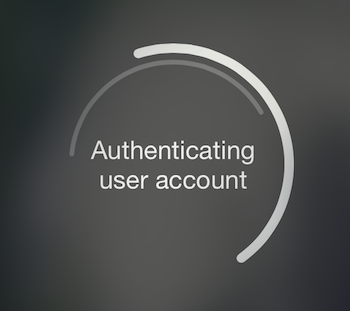
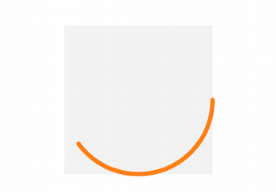
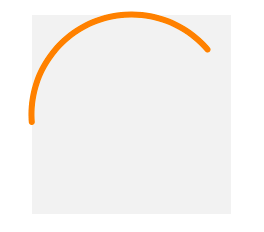
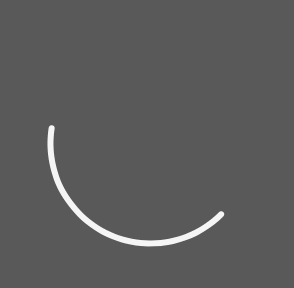
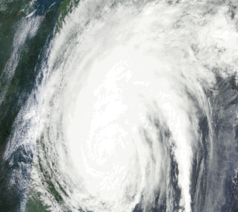

This is the welcome issue of iOS Animations by Emails. It features a short tutorial about an activity indicator animation using blur and vibrancy I developed for my app Doodle Doodle and it looks into couple techniques I did not have a chance to cover in the iOS Animations by Tutorials 2nd Ed. book.
When you finish reading through the tutorial at the bottom you will find a bunch of cool animation links. Enjoy!
- Marin Todorov
Tutorial: Creating a modern activity indicator
This tutorial is designed for Xcode 7/Swift 2 or a compatible version.
While I was working on the Doodle Doodle app I’ve prepared a number of video walkthroughs to show the users how to use and how to install the Doodle Doodle keyboard extension. I uploaded the videos on Vimeo and I was fascinated by the activity spinner they show you while you wait for your newly uploaded video to be processed:

That’s how I decided to create a similar activity indicator in Swift and code it from scratch for my app. I changed the visual to fit better iOS and here’s what I ended up with:

In this post I’ll take you through the process of creating part of this activity indicator, which I called SwiftSpinner.
Spring animations for layers
If you’ve read iOS Animations by Tutorials or have comparable Swift animations experience you know that it is very easy to create spring animations for your views in UIKit. Let's look into combining layer spring animations, blur effect and vibrancy to create a beautiful activity indicator.
Create a new Xcode project and choose as project template iOS/Application/Single View Application. Select Swift as language and call the project LayerSprings. Save it anywhere you like.
First you will add a view and an arc shape on screen.
Open ViewController.swift and add three class constants:
let size = CGSize(width: 200.0, height: 200.0)
let circleView = UIView()
let circleLayer = CAShapeLayer()
You declare the view (circleView), which you will add to the view controller and a shape layer (circleLayer) that will display the arc.
So far so good - next add the code to draw the arc in a new viewDidAppear method:
override func viewDidAppear(animated: Bool) {
super.viewDidAppear(animated)
circleView.frame.size = size
circleLayer.frame.size = size
circleLayer.position = circleView.center
circleLayer.path = UIBezierPath(ovalInRect: circleView.frame).CGPath
circleLayer.lineWidth = 6.0
circleLayer.strokeStart = 0.0
circleLayer.strokeEnd = 0.4
circleLayer.lineCap = kCALineCapRound
circleLayer.fillColor = UIColor.clearColor().CGColor
circleLayer.strokeColor = UIColor.orangeColor().CGColor
}
This code sets the desired size of circleView and then configures the shape layer to draw an orange arc. Note that you do not need a full circle but an arc so you can animate it to rotate around.
More about shape layers for animations and all the properties above you can learn in Chapter 13, Shapes and Masks and also in Chapter 15, Stroke and Path Animations in iOS Animations by Tutorials.
Now that the shape is finished you can add it to the layer of circleView:
circleView.layer.addSublayer(circleLayer)
Finally position and add the view in the view controller:
circleView.center = view.center
circleView.backgroundColor = UIColor(white: 0.95, alpha: 1.0)
view.addSubview(circleView)
The view will appear in the center of the screen and have a light background to help you observe the animations later on. Build and run to see where you got so far:

Perfect - now you can apply a spring animation to the view and animate the shape layer too!
Next add a new method which will animate the arc:
func animate() {
let newTransform = CATransform3DRotate(circleLayer.transform, CGFloat(M_PI_4), 0, 0, 1)
let rotation = CASpringAnimation(keyPath: "transform")
rotation.fromValue = NSValue(CATransform3D: circleLayer.transform)
rotation.toValue = NSValue(CATransform3D: newTransform)
rotation.damping = 7
rotation.duration = rotation.settlingDuration
rotation.delegate = self
circleLayer.addAnimation(rotation, forKey: nil)
circleLayer.transform = newTransform
}
Here you use the new in iOS9 class CASpringAnimation to make a spring animation for the layer circleLayer. First you take the current transform of circleLayer and rotate it by 45 ° to make the final rotation of the animation and store it in newTransform.
Then you create a new CASpringAnimation to animate the layer's transform property. You set the start and end values and a damping of 7. (If you'd like to fine tune the animation to your own taste try increasing or decreasing this value.) Finally you add the animation to circleLayer and set ViewController as the delegate.
Once the animation has completed you simply want to run it again in order to produce a smooth continuous animation. Override this animation delegate method to catch the animation completion:
override func animationDidStop(anim: CAAnimation, finished flag: Bool) {
animate()
}
Finally to start the animation in first place add to viewDidAppear(_:):
animate()
Now run the project to see the effect:

Before you move on to the next part - remove the silver background of circleView and enjoy how sleek the animation looks.
Adding blur and vibrancy
One of the topics that I did not have the time to write about in iOS Animations by Tutorials (but wanted to) was creating cool animations that involve blur and vibrancy effects.
Since you already got your arc animation running I’ll lead you shortly through adding blur and translucency to that animation. And if that gets you hungry for more - at the end of the tutorial there’s a link to the complete SwiftSpinner repository on GitHub for you to explore.
First you need to add few more class variables:
var blurEffect = UIBlurEffect(style: .Dark)
var blurView: UIVisualEffectView!
var vibrancyView: UIVisualEffectView!
You start by creating a UIBlurEffect - this is the effect model and it does not show anything on screen by itself. Further you have a blurView, which is an effect view that actually displays the blur effect and vibrancyView, which will add the vibrancy effect.
Next you need to initialize the effect views and add them to the view hierarchy. Add the blur effect view at the bottom of viewDidAppear:
blurView = UIVisualEffectView(effect: blurEffect)
blurView.frame = view.bounds
view.addSubview(blurView)
This creates a new effect view and initializes it with the dark blur effect from blurEffect. Run the project right now to see what this code does.
If you look carefully at the image above you can see the arc animating behind the blur. Cool!
Now let’s add vibrancy to the blur view, add to viewDidAppear:
let vibrancyEffect = UIVibrancyEffect(forBlurEffect: blurEffect)
vibrancyView = UIVisualEffectView(effect: vibrancyEffect)
vibrancyView.frame = view.bounds
view.addSubview(vibrancyView)
You create a vibrancy effect (vibrancyEffect) for the existing blur effect (blurEffect). Then you create the effect view (vibrancyView) to display this vibrancy effect.
If you run now you won’t see any difference - this is because the vibrancy effect view works only if it has some content. As the last step of this tutorial you will move the arc animation to the vibrancy view to create the final effect.
First find this line and delete it from the code: view.addSubview(circleView). Then append to viewDidAppear:
vibrancyView.contentView.addSubview(circleView)
This will add the arc to the vibrancy effect view. You can check the resulting effect:

Please note that in the Simulator the vibrancy effect doesn’t work very well. You will see the effect in its full glory if you add an image behind the blur view and run the app on a device.
Here’s how the completed SwiftSpinner animation looks on a device:

SwiftSpinner library
If you want to have a look at the completed activity spinner I developed for my Doodle Doodle app you have two options how to get it.
As source code from GitHub
Just clone the repo or download it as a zip file from: https://github.com/icanzilb/SwiftSpinner
Read through the repo README for details.
As a CocoaPod
You need at least Cocoapods 0.36 installed (this is currently a pre-release version) - this version allows you to use framework based Swift cocoapods.
- add to your Podfile:
pod 'SwiftSpinner' - install/update your project’s pods
- in your view controller add:
import SwiftSpinner - to display the activity:
SwiftSpinner.show("Connecting...")
Read through the cocoadocs documentation.
Where to go from here?
Congrats! You learned how to cheat and get some spring animations going for your layers and how to add blur and vibrancy to your effects.
If you are eager to get more random animation goodness check the links at the bottom.